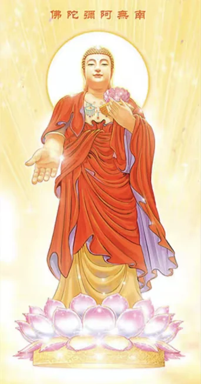

请问师父：1、师父强调过氧气对凡夫肉身的重要性，请问日常除了腹式呼吸，再通过经常吸氧来增加血氧含量是否可行?
观照0620，如果你是正常人的话，心肌还算健康正常，就不要吸氧。你这样长期吸氧反而会让你的肺的吸收功能降低的。这就很简单的道理，你明明可以走路，非要坐轮椅，坐个几年下来，你连走路都不会了，是吧？所以没有必要的，正常人就不要搞这个。如果你是病人，现在短期内需要恢复，这个时候该吃就多吃点，该吸氧就吸氧，正常人就不要搞这个。
请问Tai师父，我睡觉一直有问题，躺很久睡不著，而且只要躺下闭眼气就往眉心跑，而且易守其他地方气也会忘头上眉心跑，双盘打坐守丹田的时候也是，自己在网上查了一下是阴虚火旺，阳气浮，这种情况应该怎么办呢。而且我本来就瘦，脾胃也不好，现在只要吃米饭就腹胀难受，吃素之后更瘦了，而且长期上热下寒，这段时间也在坚持修行读地藏经，现在脾胃虚想吃点中药也补不进去，感觉有点进入死局了，请师父开示指点现在应该怎么破局。
下一个问题，闻与所闻尽，你说这些个问题，气往眉心跑，还有阴虚火旺，阳气火，我觉得是我看是你呼吸不好，呼吸没练好，腹式呼吸。你就把注意力放到丹田，然后练腹式呼吸，白天练，早晨起来练，晚上也练，练著练著你的呼吸好了，整个身体的能量就开始足了。
吃的倒没什么。吃素很正常，脾胃虚想吃点中药也补不进去，正常的食补就可以了，不用著急找中药，我不知道你多少岁，年轻人就不需要靠药物。先把呼吸练好，然后再磕头，然后磕著磕著体力体能消耗了，就想多吃点，这个时候就多吃点，没什么，主要先第一步是练好腹式呼吸，还有磕头。
Tai师父吉祥，请问师父，身体带给意识的感受，不是累就是困，昏昏沉沉一点都不舒服，全是沉重的负担感，怎么办呢？干啥都觉得累，消耗精力的感觉，正常吗？打坐的时候，感觉要是呼吸调节得很稳定的话，坐的也更稳定，呼吸调整很重要？
Fun09，一直处在昏昏沉沉的状态，要么是呼吸不好，氧气不足；要么是营养不良，所以要吃的好。营养不良不是吃的少，现在人很少有营养不良的，而是吃了很多不该吃的东西，导致你的血液浑浊，所以脑子会发沉，然后就是氧气不足。氧气不足练腹式呼吸就可以了。
吃的东西要吃得清净一点，不该吃的少吃，不要吃肉，油腻的少吃一点，主食稍微少吃一点，多吃蔬菜水果。然后平时多念经、念咒，因为脑子里妄想太多，也会让你脑子昏昏沉沉的，很费神的。
正常地每天打坐、磕头，坚持来，这样就可以了。打坐的时候呼吸很稳定的话，坐的也更稳定。呼吸就不要调整了，打坐的时候能做到思佛就思佛，不行就观佛，不行就念佛，不要管呼吸的事，正常呼吸就可以了。不用想、不用管，这样身体自己会呼吸，越是想控制它怎么样怎么样，反而对身体不好。
顶礼Tai师
1、吃完饭后感觉好困，这是血液里氧气含量低导致的嘛？练腹式呼吸能不能缓解一下这个问题？
橘子舟，腹式呼吸的问题，你去看《坐禅1》，《坐禅1》写的比较详细，《坐禅1》写的时间太长了，可能我现在有些数据记不清了，你把《坐禅1》好好看一遍。
师父，我平时打坐，会感觉到身体气血越来越堵，免疫力下降，身心都不舒服。但是站桩却很明显的气血变好，精神也变好。我反复比较过，打坐身体状态就下滑。我不明白，希望师父能帮我分析一下。
ZH，打坐会身体状态下滑。第一本书好好看一下，你看了吗？第一本书里讲了，首先你得练好腹式呼吸，磕头，练体能，然后吃的也要清净一些，至少不要吃肉，这些基本都做好了，你打坐的时候才能舒服，否则有可能会变得越来越差。
因为打坐的时候消耗能量很大，可能氧气不足、营养不足什么的，心肺功能不够强的话，你坐不住的。
Tai师父好，视频号里有个叫六观小院的讲到胎息炸毛，就是启动胎息的方法，说这样更容易进入禅定，能减少熬腿。请问Tai师，这个理论是否如法？可以学习吗？
前堂客~王玉，他们所说的胎息实际上就是腹式呼吸，练成了就行了，不需要再管。
要进入禅定，腹式呼吸是必须的，没有练成腹式呼吸就很难进入禅定。所以先把呼吸练好，然后再打坐。练成腹式呼吸之后打坐，下肢更容易进入状态，就是更柔软，双盘的时候的痛苦也会少一些，这个是肯定的，所以腹式呼吸必须要练成。
但是你说能减少熬腿的时间，这个倒很难说，但练好腹式呼吸之后，疼痛的强度还是会明显有减少的。
吸氧机增加氧浓度对打坐有多大影响？
下一个问题，江震，吸氧机增加氧浓度对打坐有多大影响？
没啥影响。我们就不搞这些个吸氧机这种问题、东西，就正常的你的吸收氧气的量是根据你的肺的吸收能力来决定的，除了靠撑大腹肚子增加肺活量之外，还得靠你的血液里的吸收的能力，血液的血红蛋白、红血球这些个，它们数量要超过普通人的标准的时候，你才能说吸进去的更多，所以靠单纯的靠吸氧机是没有办法真正给你加上这种吸氧的能力的，除非你是病人。
顶礼Tai师父！请问只是练成了腹式呼吸，但是没能打通筋脉，打坐的时候最多能双盘一个小时多一点，这样对身体有什么样的帮助呢？
下一个问题，小鱼鱼，121楼，只是练成了腹式呼吸，但是没能打通经脉，打坐的时候最多能双盘一个多小时，这样对身体有什么样的帮助呢？
至少比常人健康，你起码有个健康，腹式呼吸练成了就比普通人健康不少，很多人身体一些炎症都会自己就会好，再努力努力能达到两个小时，能打通的时候就健康程度就会提升一段。最起码修行最起码你得有个健康，好的身体和好的精神状态，身体健康就这个意识也清爽，头脑也清醒，你这样不挺好吗？
师父您好，请问，腿疼，有关节炎，可以磕大头吗？打坐半个小时，从头疼到尾，是否要暂停，练会了腹式呼吸再打坐呢？
下一个问题，青玄，请问腿疼有关节炎，可以磕大头吗？打坐半个小时从头疼到尾，是否要暂停，练会了腹式呼吸再打坐呢？
你还是先把腹式呼吸彻底练成后打坐，这样更好，尤其是身体不好的人。如果身体健康的话同时来也可以，但是身体不好的情况下，就先把腹式呼吸彻底练成，然后就先保证氧气量，然后再打坐，这样修身体修复的会快一些。
磕大头可以适当的做，这个也是先把腹式呼吸练成，因为氧气是修复身体的重要的原材料，你得有充足的氧气才行。如果氧气不够的话，打坐反而伤身体，尤其身体不好的人更容易，所以你还是先把练腹式呼吸彻底练成，可能两三个月，还有控制好饮食。
师父您好，请问腿疼有关节炎可以磕大头吗？打坐半个小时，从头疼到尾，是否练会了腹式呼吸再打坐呢？
下一个问题，青玄，请问腿疼，有关节炎，可以磕大头吗？打坐半小时，从头疼到尾，是否练会了腹式呼吸再打坐呢？
好像前面已经回答过了。
Tai师好！感谢您昨天的开示、指导！听了您的开示，不要总是认为什么就应该是我的，不要认为付出总有回报，多做善事、随缘而安，说不定以后会有回报。目前我的心里，就是因为前几年付出很多，加班熬夜累坏了身体顾不上管家里，全省提拔考试又排在前茅，结果提拔没有我，心里一直放不下，导致心情不好。听了您的开示，我慢慢放下、不纠结，让心逐渐安定下来。
一是关于腹式呼吸。在练成腹式呼吸前，能不能采取每日吸氧的方式促进身体康复？
下一个问题33楼，guangtz，这位问关于腹式呼吸，在练成腹式呼吸前，能不能采取每日吸氧的方式促进身体康复？
你有什么大病吗？你重症患者吗？不是的话就算了，因为不需要这么急切的做这种事情的时候，你贸然的做，那么会在不吸的时候让身体会更难受，也就是说你会上瘾，对吸氧会上瘾，这就没有必要了，反而会给你造成不好的情况，所以你就正常的修行，如果你现在身体属于正常人，不是有什么大病的情况下，那就正常修行就可以了。
Tai师父您好，弟子读《地藏经》一年，然后又持大悲咒半年，这半年长时间没看书思考，每天就念咒走路练习双盘，现在双盘只能坚持几分钟。
问题：最近重新开始看书，投入工作，感觉看了几天就脑子发涨发紧，感觉人是懵的。现在不管是念咒，看书等，只要一思考就脑子发涨发紧，出声念咒还好点，默念脑子特别紧。我现在工作需要长时间思考，但是又达不到那种不用思考就知道答案的境界，请问如何解决一思考就脑子发紧发涨的问题？
下一个问题泡影，看书就会脑子发胀发紧看，修行的时间还比较短，《地藏经》一年，持大悲咒半年，打坐也是几分钟。你发胀发紧主要是你的身体不行，不是说什么单纯的因为以前没思考，现在突然思考了。按理论上说思考的确会往脑子充血，这是真的，不过正常的思维起码两三个小时应该没啥问题。
我以前也说过我写书什么做什么的，一般两个小时还是可以的，再多了连续干两三个小时可能会稍微累一些，但还不至于到脑子发胀发紧的程度。所以你这个问题还是呼吸的问题，你的呼吸不太好，没有练成腹式呼吸，导致你脑子里稍微往上涨点气或者出点血，你就开始受不了了。
你要平时多做腹式呼吸，练习，先把这个腹式呼吸练好，这样更多的血液往肚子上引，脑袋上就变得更加清爽，稍微多充点血，也不至于让你觉得难受，好吧？你就先好好练腹式呼吸，还有磕头什么的。
师父您好，我是小白，有个问题不太明白，记得南师和道家也教授过逆腹式呼吸，想请问腹式呼吸和逆腹式呼吸有什么区别，什么功效？我刚开始练，有时不注意弄成逆腹式呼吸了，会有不好的影响吗？
Xiaoshizilucky，问的是逆腹式呼吸的问题，《坐禅1》里讲过了，正常的腹式呼吸应该是吸气的时候肚子鼓起来，胸部不动；逆腹式呼吸是吸气的时候肚子收起来，然后胸往上扩，这种称为逆腹式呼吸。一开始练习正常的腹式呼吸，还是有一点难度的，需要做一些准备，平时刻苦一点，睡觉前躺著也练一练。
Tai师父好！我平时腹式呼吸感觉吸入不了多少气，肚子总是鼓鼓的，老是嗳气，怎么回事呢？
一念，练腹式呼吸，一开始吸气的时候要用力撑开肚子，呼气的时候也要用力把肚子往里缩才行，一开始都是这么练的。你说肚子一直鼓鼓的，你是没有练呼气，呼气的时候把肚子往里收，要用力去收。
请问师父：腹式呼吸肚子鼓起，横膈肌下沉，那胸腔是不是也要扩张。也就是腹式呼吸是在平时胸腔扩张呼吸的基础上，增加腹腔一起鼓起。而不是仅仅肚子鼓起，胸腔有意控制不扩张（目的是横膈肌能尽量下沉）。
刘面，腹式呼吸是只动肚子不动胸腔。我们普通人胸呼吸胸腔会扩，但是腹式呼吸不用动胸腔，胸腔一直保持那个状态不变，只是用小肚子的鼓起和收缩来实现横膈膜的下沉或者上去，这样的话下去的时候空气自然而然会挤到肺部当中，不是我们吸进来的，只要里面有大气压差的话，它自然会被压进来。
不是我们用鼻子使劲吸氧，呼吸不是这样的，而是只要把下腹部的腹肌打开，肚子鼓起来，然后空气就会自然而然地进来了。
还有，胸腔扩张并不是横向扩张，横膈膜下沉的话，胸腔里边肺下半部没有被激活的部分慢慢拉伸，然后就开始激活了，不是向左右横扩的。
一般普通人，尤其像游泳运动员，他们练习呼吸、加肺活量的方法就是让胸腔横著扩张。但是我们不要这个，而是往下压横膈膜，这样的话肺部的下边也会被激活，它们会得到更多的空间，是这个原理。
2、请问练腹式呼吸，只是吸气让肚子更鼓起来百分之二十，呼气更瘪一些，呼吸完了突然不撤力可以吗
下一个问题，练腹式呼吸这个已经说过了，吸气，吸气的时候肚子鼓起来，稍微多吸入百分之二十程度，不要使劲吸，然后肚子撤力，肚子鼓起来的时候肯定是用力把它往前推的鼓的，然后肚子一撤力，肚子就进去了，然后呼气，然后等待，静止，等个几秒钟不，需要刻意控制，你身体就会自然会然后有这个节奏。
呼气之后不是憋气，呼气之后这个时候就会出现停顿，停顿一会然后再吸气，呼气是撤力，吸气是用力把肚子鼓起来，然后呼气是撤力，不是用力把肚子缩进去，不用用力的，你只要撤力就行了。
4、我试了练呼吸的各种方式，感觉斜靠在沙发上，腰底下放个垫子，好像腹部最放松，吸气鼓起来的幅度最大，这样练可以吗？
我试著练呼吸各种方式……，练呼吸最好是站著练是最好的。
你是斜靠在沙发上腰底下放个垫子，你觉得这样坐著舒服也可以，但是最好是站著练，只要不是躺著练还行，因为躺著练是也、可能是容易睡著什么的。
还有身体放松的状态，躺著看似很好，但是注意力上会涣散，我们还得提起注意力去练、练肚子。
弟子顶礼师父！有两个问题请师父解答：
1、在练腹式呼吸的时候，同时默念佛号，呼气时嘴唇微动没问题，鼻子和嘴都在呼气，但是吸气时如果嘴唇动念佛，则鼻子在吸气，嘴在呼气，是矛盾的，如果嘴完全不动，感觉佛号力量很弱，在暂时做不到不动嘴默念的情况下，怎么做比较好？
下一个问题，李永军，这位问练腹式呼吸的时候还要念佛。
你有必要一定要把两个事放到一起吗？你就专注的练腹式呼吸就可以了嘛，这样就没有问题了。
念佛是你可以默念，一直默念，心里默念，不需要动嘴，也不需要动气，吐气啥的也不用，就是心里默念，脑子里默念，然后呼气吸气这个就可以了。
还有如果但凡你觉得烦恼或者复杂，你就直接选择最简单的，练腹式呼吸就单纯的练腹式呼吸。你也不可能一天二十四小时都在练腹式呼吸吧，可能一天练个半个小时左右，然后剩下时间有空就心里默念阿弥陀佛就行了。
顶礼Tai师父，师父能不能给说一说腹式呼吸和逆腹式呼吸都适用于修炼什么，怎么说的都有，整的挺晕的，打坐时用什么呼吸，站桩时用什么呼吸，平时时用什么呼吸，师父能不能给详细说一说
下一个问题，光明，腹式呼吸，逆腹式呼吸。你去看第一本书，我的要求是练成腹式呼吸。逆腹式呼吸是前期练的时候会有那样的过程，但是过了那个之后就不需要了，而且你一旦练成腹式呼吸，后面自己想做胸呼吸都很难，而且也不需要了。
腹式呼吸是练成之后，打坐的时候，站桩的时候，平时也是，都是呼吸方式，整个你的生活方式全部改变，生活上的呼吸方式全部改变的，而且这是最好的方式，最好的呼吸方式，不要管其他其他人说什么，你既然要学我的法，从头到尾全部用腹式呼吸这就可以了，你只要练成了以后就不用管了。
前期需要可能一两个月专门每天拿出一点时间来练，一想起来就练，但是练成之后你的身体就已经记住了，那就自己会做腹式呼吸，后面就不用管了。
师父好，请问弟子现在还在抽烟，可以练习腹式呼吸么？正在戒烟，没完全戒掉，怕呼吸深了对身体更不好。
下一个问题，逍遥游，弟子还在抽烟，可以练习腹式呼吸吗？正在戒烟没完全戒掉，怕呼吸深了对身体更不好，没有关系可以练的。
还有磕头磕大头，把那个里边的脏东西都给震出来，正常你不可能你一边抽烟一边练腹式呼吸，不抽烟的时候练。
Tai师父好！顶礼师父！弟子福薄障重，2025年11月中旬才有机缘接触到您的讲法。从此开始按照您开示的方法在练习修行。有些问题想再请教师父，弟子理解执行的是不是正确。还请师父慈悲开示：
1、呼吸：练习腹式呼吸，有空就练，最好坐著，其他姿势也行。用力鼓肚子吸，然后尽量收缩呼。这样是会慢慢练到肚子发热，全身发热的程度吗？然后就会不用刻意注意就练成自然腹式呼吸了吗？自然的腹式呼吸不需要想著鼓肚子就吸气了，只是呼气的时候收缩一下肚子。就是腹部肌肉不再紧张绷紧状态而是变松弛了，请问您我这样理解对吗？
幻世浮生，这位问腹式呼吸的问题，腹式呼吸最好是站著练，初学最好是站著练。然后一开始是用刻意地去鼓起肚子，然后吸气，然后刻意地再用力收缩肚子来吐气。但是练成的话就不再，不用再管肚子，什么鼓起、收缩，这个都不用管。呼气的时候也不用收缩肚子，然后腹肌的紧张程度也会松弛下来。
3、我在练习腹式呼吸时，腹部可以鼓起，但是吸到一定程度，心窝里面会像有东西堵住，没法继续往下吸气，有一周时间了，一直这样，是否是因为我心窝这里不通导致影响腹式呼吸？另一个，腹式呼吸呼气时，会快速呼气感觉舒服，慢慢吐会比较难受，是否要习惯慢慢往外呼的方式？
下一个问题，练习腹式呼吸吸气的时候感觉到有点堵，心窝堵。一开始刚练的时候多多少少都会有不适的地方，因为腹式呼吸是鼓起肚子，然后这个横膈膜往下压，它会让有些内脏位置开始变化，或者挤到一些内脏，这个心、肺脏往下拉的时候也会影响到中间心脏，所以会有一点感觉，不过你只要坚持到你自己能忍受的程度，就觉得很不舒服了，那就不要再练了，就练到那个程度就可以了。
每天坚持二十分钟左右，早晨坚持二十分钟左右，晚上再做，平时也是一想起来就要练腹式呼吸，不需要做到很深的程度，很深的腹式呼吸是靠打坐来练的，不是平时靠这个练，平时练的只要做到腹式呼吸就够了，不需要很深的程度。
然后以后打坐的时候也不要管呼吸，你只要练成了自然而然修行的境界上去了，这个呼吸就会变得越来越深。然后吐气的时候你不需要故意拉长，就正常吐气，然后中间有停顿的时间，这个是在你感到舒服的时候就一直停著，然后开始有点不舒服了再吸气，中间停顿的时间是打坐的时候会逐渐拉长的，所以应该把注意力放在中间停顿的时间上，而不是你吐气的时候快不快的问题，吐气你就正常吐气就可以了。
请教师父，晚上睡觉仰著睡觉可以吗？另外，如果可以仰著睡的话，仰著睡觉练习腹部呼吸可以吗？
下一个问题，旻了，晚上睡觉仰著睡觉可以吗？另外，如果可以仰著睡的话，仰著睡觉练习腹式呼吸可以吗？可以。不都是仰著睡觉吗？绝大部分人都是仰著睡觉，你是平时都是侧著睡吗？我想大部分人都是仰著睡的。
一开始不用枕头睡的话，最好是仰著睡，都仰著睡习惯了，正常的躺著睡觉习惯了，然后可以翻身或侧著睡都可以。一开始你不用枕头，直接侧著睡的话，可能脑袋有点，脖子有点不舒服。但是习惯了平躺著睡觉，不用枕头，然后慢慢就可以习惯，侧身也不用带枕头了。
还有仰著睡觉练习腹式呼吸，可以。反正睡著了你就停了。而且，一般情况下绝大部分人，健康的人睡觉的时候，自然而然就会变成腹式呼吸的。
请教师父，近期我在用站桩来增强体质和气血，请问站桩时该怎样呼吸才能进步更快呢？
下一问题，好春宵&，近期我在用站桩来增强体质和气血，请问站桩时该怎样呼吸才能进步更快呢？这个我也说过了，站著时候练腹式呼吸。吸气，然后鼓起肚子，用力的鼓起肚子，然后用力再收缩肚子，然后呼气，一开始都是两边都要用力的。等差不多练了一段时间之后，吸气的时候用力鼓起肚子，呼气的时候就放力，只要力气一放，肚子自然而然就会收点进去。然后再过一段时间就可以不用用力什么的，基本上就能练成了。
还有，站著的姿势是两脚宽与肩同宽，然后手自然下垂就够了。也有一些气功的什么练法，是双手抱月那种姿势，还有举过头顶，这种姿势。单纯地练腹式呼吸就没有必要，你就正常地站著，然后练习，练习个二十分钟左右。如果是初学的话，可能练一会的话又感觉会腹部发热什么的，这样发热有点过了，感觉过了就可以停止。二十分钟就差不多了。
每天早晨练二十分钟，晚上睡觉前再稍微练一会儿，这样坚持个两三个月，基本上能把腹式呼吸给练成。平时也得想起来了就练习，这样都要更快地练成了，然后以后就不用再练，这个身体就换了整体的呼吸的方式了，
顶礼Tai师，弟子之前学过一门跟逆腹式呼吸有关的功法，看您所著的书里提到过相关信息，所以弟子想请问坐禅到什么程度就不能再练逆腹式呼吸的法门了
下一个问题，厚德载物，这位问坐禅到什么程度，就不能再练逆腹式呼吸的法门了？你正常人就不要练逆腹式呼吸，它本来就是违背了正常的生理运作，所以它就是不对的，做多了都会有相应的对身体有损害的，所以平时就干脆不练就好。你就练个正常的腹式呼吸多好，干嘛非要抓住那个不放。而且呼吸应该是无作意下，就是不造作的不控制的，自然而然形成的，这样是才最好的。
一开始我们都是正常的小孩都是腹式呼吸的，后来就妄想多了之后，身体收缩就变成了这种胸呼吸。所以把它改过来，回到原来的腹式呼吸上，这就可以了。
师父好，打坐已经七个月了，打坐时候身体坐直，呼吸有点短，而且稍微有点沉重，很别扭，没法集中精神，这是怎么回事？
下一个问题39楼幻海，打坐已经七个月了，打坐的时候身体坐直，呼吸有点短，而且稍微有点沉重，很别扭，没法集中精神，这是怎么回事？
你是因为呼吸沉重有点短，这样吗？那你先把呼吸练好，呼吸是要站著练的，初学最好是站著练，每天早晨站著练二三十分钟，这样坚持两三个月，基本上呼吸都练成了腹式呼吸之后，再打坐的话就不会有这样的问题了，好吧。
感恩师父！感谢师父给予我康复成正常人的信心和希望！医院给我的诊断就是急性轻微脑梗，目前我开始慢跑、拉伸、站桩、练习腹式呼吸、打坐，参加咱们群里活动，和师兄们一起放生。
问题1、站桩时可以练习腹式呼吸吗？如果可以，需要有注意的地方吗？目前我练的是手放在小腹的高度，因为右手不灵活，右胳膊用不上劲，抬不高。经常在站桩时数呼吸，数著数著就忘了。
下一个问题，10四楼guangTz，问题一，站桩的时候可以练习腹式呼吸吗？可以，早晨起来先练个二十分钟，站著练腹式呼吸，腹式呼吸一定要是站著练的，一开始初学一定要站著练。
顶礼Tai师父，我想请问一下腹式呼吸的问题。我平时也在练腹呼吸，大概也有四五个月了。如果心里想著用腹式呼吸，那就可以比较自然的腹式呼吸。如果一忙，或者什么事情打岔了。就好像又退回到胸腔呼吸。是因为是肌肉没形成记忆？那是不是先坚持练下去？有没有什么好的方法能较快的练成到二十四小时都用腹来呼吸。谢谢
下一个问题，二无我，关于腹式呼吸的问题，大概已经练了四五个月，自己控制的时候可以腹式呼吸，但是如果一忙或者事情打岔了，就会好像又退回到胸腔呼吸，是因为是肌肉没有形成记忆吗？怎么样才能自己练成腹式呼吸？正常继续练就可以了。
还有就是该打坐就得打坐，虽然练好腹式呼吸之后再打坐更好，但是我看你的情况还是打坐吧，因为打坐的时候是自然而然就会进入到腹式呼吸当中，然后时间越长，你在里边就越容易让身体记住这个状态，然后慢慢就变成记忆了，那以后就不用管它也会自己那么做了。
你现在四五个月练了四五个月都没有练成说明，要么是你太过于懒散，没有认真练，要么你是在控制身体的方面比别人稍微差一些，因为大部分人只需要两三个月都可以练成，一天也不需要练太长时间，早晨起来二十分钟，然后平时想起来就做，想起来就做，这不需要刻意的强迫就是想到了就做一下。
这样坚持个三个月左右，两三个月基本上都能练成的，没有那么难度，哪怕是不修行的人，为了自己的这种身体健康练一下都是好的。那么你就是每天打坐吧，哪怕是单盘，打坐半个小时开始，一个小时两个小时每天坐一坐，应该更快的能练成腹式呼吸。
顶礼师父，耐心的回复。可能师父也知道，弟子们有时候就是想跟师父说说话，获得一些信心，所以看师父昨日那么耐心地开导，也没那么丧了，真的是感恩之心无以表达。
1、师父我现在腹式呼吸时，吐气是要发力且慢的，但是吸气时就自然“嗖”的一下鼓起来很快，您之前说要吸吐一样时间，我需要刻意地训练控制吸气时间吗？
极乐是我家，练腹式呼吸，最好是顺其自然。只要把呼吸的顺序弄明白了，肚子鼓起来的时候吸气，肚子收起来的时候呼气，不再用胸呼吸，只要这样做了，就不要刻意地再管这个事。怎么延长时间，控制时间，这都不需要。就靠正常打坐慢慢来延长时间，不要刻意地去练，这样就行了。
3、打坐时刻意拉长呼吸，一分钟是四组呼吸，如果不刻意是六组，师父，这样还需要继续练习腹式呼吸吗？
打坐的时候不要练呼吸，也不要控制呼吸，这个没有必要。要练习腹式呼吸的话就站著练，练好了，然后再打坐。每天站著练习二十分钟左右，早晨二十分钟，晚上也可以，睡觉前练个十分钟、二十分钟，感觉累了就可以停。如果二十分钟到之前觉得累了，就可以停了。
2、腹式呼吸，坐著的时候有时候呼吸靠后，刻意控制进气速度，就有呼吸和呼吸道摩擦的声音，这样是否正确？
练腹式呼吸的问题，如果你是打坐的状态下，就不要刻意地练习，腹式呼吸站著练就可以了，打坐的时候不要刻意地控制呼吸。你说你可以控制，对后面的修行都不太好。打坐的时候就正常呼吸，你觉得怎么舒服就怎么呼吸，就可以了。
2、末学发现打坐时如果屁股、大腿、小腿的肌肉或者筋疼，忍忍就过去了，会越来越软。但膝盖如果疼，就可能真的受伤。比如上个月我强行高盘莲花坐，打坐时左膝盖内部很疼，忍痛盘了两天，发现膝盖受伤了，下坐后也疼，休息了两三周才基本恢复。
请问Tai师，打坐时哪里疼时可以忍的，哪里疼是姿势错了，不要强忍呢？
如果腿很粗就硬高盘的话，骨头从里边会撑开，膝盖有可能受伤。
一般腿不那么粗的话，应该还不至于，高盘就是把脚后跟贴到腹股沟，把右脚的脚后跟贴到左腿的腹股沟这个关节处，再把另一条腿也这样放著，这样算高盘，脚趾头最好能出到大腿外侧，这样姿势就还算正确。
所谓的打坐受伤主要就是骨头，其他地方肌肉、筋这些都是软的，所以坐的时候可能绷直或者有点压迫，它都可以恢复过来。但是骨头、软骨、膝盖的软骨这些，一旦受损的话它修复过来时间非常慢，所以只要注意到骨头疼不疼就可以了，筋、肉这些无所谓。
3、Tai师，我在打坐时，呼气后会自然地停顿，过了十秒左右才想去吸气，这样对吗？打坐的时候呼气时需要收憋肚子吗？
下一个问题我在打坐时呼气后会自然会停顿，过了十秒左右才想吸气这样对吗？
打坐的时候呼气时需要收憋肚子吗？不需要。打坐的时候就不要控制身体，让呼吸自然进行，停顿的时候也要随著自然，自己想吸气的时候就吸气，不要控制。
我的建议是你不要去管呼吸，不要去把注意力放到呼吸，看它什么时候吸气呼气，看都不要看，你要么观阿弥陀佛，或者说要么观丹田或者参思情，这些地方都注意力就直接拉到别的地方，不要放在呼吸上，这样最好的。
3、腰腹肌肉没力量，是先磕头再练腹式呼吸吗？
可以，两个要一起来，一边磕头，还要早晨练腹式呼吸。腹式呼吸平时都可以练的，只要有空，想起来了就练一练，总之练到把正常的呼吸都改变过来，平时也是腹式呼吸，这样就好了。
Tai师父好！我在读《坐禅1、2》的过程中好几次感动落泪，觉得很幸运在佛菩萨的指引下遇到您这样的善知识，不论是理论还是实修方面传授的都是精华干货，解决了我非常多的困惑，特别感恩。看到您书的那天正是我吃素断肉满百天之时，我觉得这也是佛菩萨给的感应吧。我打坐半年多，每次二十至五十分钟左右，开始打坐的时候我就只是放松地坐什么也不想，坐著坐著身体就会慢慢变为腹式呼吸，不过日常生活中并没有专门训练腹式呼吸，接下来我会按您所教练习腹式呼吸。提到观呼吸，我不知道是不是不太适合我，因为我打坐时观呼吸的话反而不知道如何呼吸了，会很刻意。另外，我有时打坐坐著坐著就会无抓无挠很烦闷怎么坐都不舒服静不下来那种感觉，然后就不坐了，这种情况是不是经脉淤堵的问题？有时打坐会似睡非睡的状态，看了您的书才知道这样很危险。这几天我没有打坐了，想请教Tai师父，我是不是需要练好腹式呼吸后再重新打坐？（女，四十四岁，月经正常）感谢您！
在贴吧已经回答过了，这里就不重复了。
Tai师父好！我在读《坐禅1、2》的过程中好几次感动落泪，觉得很幸运在佛菩萨的指引下遇到您这样的善知识，不论是理论还是实修方面传授的都是精华干货，解决了我非常多的困惑，特别感恩。我的修行之路也是充满了坎坷，现在想想坎坷的原因是道心不坚、无恒心、贪求心重.2023年去普陀山之后回来遇到了一位修行师父，在师父的指点下拜忏持戒修心，时不时地念经，但依然心性不稳，遇事就会五毒心起。后来进行了百日过午不食，在第九十九天打坐时有些感应，问了修行师父后得知是与佛菩萨有链接了，而看到您书的那天正是我吃素断肉满百天之时，我觉得这也是佛菩萨给的感应吧。目前我打坐半年多，每次二十至五十分钟左右，开始打坐的时候我就只是放松地坐，什么也不想，坐著坐著身体就会慢慢变为腹式呼吸，不过日常生活中并没有专门训练腹式呼吸，接下来我会按您所教练习腹式呼吸。提到观呼吸，我不确定是否不太适合我，因为我打坐时观呼吸的话反而不知道如何呼吸了，会很刻意。另外，我有时打坐，坐著坐著就会无抓无挠很烦闷，怎么坐都不舒服静不下来那种感觉，然后就不坐了，这种情况是不是经脉淤堵的问题？有时打坐会似睡非睡的状态，看了您的书才知道这样很危险。这几天我没有打坐了，想请教Tai师父，我是不是先练好腹式呼吸后再打坐比较好，还是可以同步进行呢？（女，四十四岁，月经正常）感谢您！
打坐的时候不要观呼吸，尽量不要观呼吸。你就念佛就好了，心里念佛，文字妄想的念佛也行，观想佛也行，思佛也行，总之打坐的时候不要练呼吸。
然后平时练呼吸，早晨起来站著练呼吸，练十分钟二十分钟左右就差不多了，一天练两次，晚上再练一次，基本两三个月就可以把整体的呼吸都给改变过来。
专门拿出时间练的时候就这样，每天早晚二十分钟左右。平时一旦想起来了，做任何事情都会呼吸，你总不可能不呼吸，你只要想起来了，那就用力地去练腹式呼吸，练几分钟也行。你刻意地做几次，反复地练，很容易的，两三个月就可以把呼吸彻底改变过来，平时也会做腹式呼吸的。先练好了这个，然后再打坐。
但是打坐，你目前二十分钟五十分钟这个程度，每天坚持也可以，哪怕你似睡非睡的状态，二十分钟五十分钟内还不至于产生对身体很不好的状态。
如果超过两个小时，坐两个小时为标准，一个半小时以上还是这样状态，那肯定有问题。一般一个小时以内你只要坚持坐著，哪怕是昏沉，都是身体往好的方向改变，远远大过于你不好的方向的改变。所以打坐还是坚持一下好，磕头和呼吸一起都来，有时间的话都做。
顶礼师父，最近工作繁忙，功课有点落下，感觉烦恼生起来了，不过一听师父语音烦恼就消一半了，感恩师父！打算把落下的呼吸补上来，站著练呼吸可以观佛像吗？站著练呼吸时观这尊佛像是否可以？

下一个问题，非子，220楼，站著练呼吸的时候观可以观佛像吗？可以，不过一般站著练呼吸是不是睁著眼，因为你闭著眼好像练得不太好吧。通常我们建议站著练的时候就是睁著眼或者眯著眼，不能完全闭著眼，那样的话一般观佛像都是闭著眼的，所以你随意你怎么练都可以，这又不是打坐的心法，只要能让你在修行上进步，什么法门都可以的。
2、腹式呼吸练习，最好站著，按您书上说的方法练。如果坐著或者躺著想起来是不是都可以练习？熬腿的时候也可以吧？
第二个问题，腹式呼吸最好是站著练，然后平时想起来就练一练这就可以了，没有什么明确的规定。只要练到彻底改变呼吸方式以后就不用再练了，熬腿的时候就别练了，熬腿的时候一开始稍微练一练，然后心静下来之后就不要练了。
3、不知道您听过下面这十六个字么？“一吸便提，气气归脐，一提便咽，水火相见”，意思是腹式呼吸时，吸气时同时提肛，呼气时咽下口水，这样对么？
我们练腹式呼吸，你要是打坐的时候练呼吸，那么应该前期，不是一直都这么来的，前期需要提肛，是吸气时提肛。这样提肛一下让下边锁住，要不然有可能会漏气，时间长了，打坐的时候完全不管的话，所以有提肛的动作，但是这个也不能过猛。
过猛了你天天练坚持练，说不定以后就拉屎的时候很累，肛就打不开，拉屎都很累，所以还是适度的练。
还有咽口水这个问题，我是不主张咽口水的，这个也是一种造作。所以打坐的时候就正常打坐，连呼吸都不要练，这是最好的，念佛观佛思佛是最好的，平时站著时候、活动的时候专门练呼吸，这个时候可以提肛，咽口水这个就没必要了，随意，你觉得有必要就做。
3、如果有痔疮会不会加重？能继续练习腹式呼吸吗？
有痔疮的话更应该练腹式呼吸，肌肉腹肌打开的话腹压就下来，痔疮那个鼓出来的就会进去。为什么会痔疮？应该是腹压太大，里边装的太多东西，而且肌肉紧绷，腹肌紧绷就会把里边的肠子给往外挤出来，所以腹压下降了，它就会一般痔疮自己就会进去。
顶礼Tai师父！
现在已经练成了腹式呼吸，但是打坐到最后总感觉呼吸困难，就是吸气费劲，导致打坐有点阴影，感觉一上坐就呼吸不畅了，是不是平时还要加强练习腹式呼吸？
孙hong静，就算练成了腹式呼吸，打坐的时候也有一段时间会呼吸变得急促……，因为你身体还得跟著发生变化，你只是把呼吸的方式改变了，但还没有把全身的心肺功能都强化到那个程度，所以平时还得磕头。
腹式呼吸已经练成了，就不用刻意地再练，打坐的时候更不用管呼吸，让它自然而然地呼吸。如果有一段时间呼吸困难，或者呼吸变得非常急促，这种事情你不用管，坚持下去就可以了，只要不是疼得很厉害，基本都可以坚持下去，身体自己会调整好的。
问题2、腹式呼吸，吸进去的时候肚子鼓不大，肚脐四寸以上位置是凹进去的，前几天吃点东西就顶著，需要打嗝才能下去，下定决心少吃不吃。
自从腹式呼吸之后，胸部那位置难受，需要深呼吸会好点
下一个问题，腹式呼吸的问题。自从腹式呼吸之后，胸部那位置难受，需要深呼吸会好点。
因为你腹式呼吸还没练完，筋膜还抓著这个肉，所以你要硬撑撑开肚子的时候，它也就会有难受的感觉。这个得需要磕头、打坐，用这些的东西、这些修行来把筋膜慢慢都化开，然后腹式呼吸也继续练，这修行不是一天两天的事情，一开始都有各种不适的过程，坚持下去就行。
师父吉祥：
三宝弟子咨询困扰我一年多的频繁打嗝问题。
弟子中年男性，修行的基本过程如下：
1、皈依前：
平时已经养成腹式呼吸习惯；接著练了八段锦、道家的长寿功一年。后来散盘打坐盲修了三年；去年去了趟五台山，发心吃长素，禁欲，持诵《金刚经》和几个心咒。开始练单盘，打坐贪求快速强身、开智慧，在网上遇到一位禅师教类似宝瓶气的呼吸方法（具体方式：缓慢吸足一口气，憋气憋到憋不住了；然后再徐徐吐气，接著继续憋气，然后吸气……如此循环）。这种呼吸方式帮助我在禅堂熬过了禅七，单盘强行突破到一个小时！
但是很快出了副作用：
一直不停的打长嗝（胃气上来，声音很大，我并没有刻意用意念导气运行）；白天行、住、坐，都有在不间断打嗝，饭后几分钟也开始不停的打嗝，连睡觉吉祥卧也打嗝，总之，只要醒著就打嗝，影响周围人，很受困扰……感觉檀中穴这个位置，像是憋著一团气不能畅快呼出，但是打嗝可以控制住，比如在上班的时候可以憋住。看过中医，诊脉检查不出来是什么病症。
2、皈依后：
上面这种特殊的观呼吸方式，练了两个月就放下，不敢再练了！接下来打坐中，尝试用数息、呼吸念佛、自然呼吸等方式，也尝试过俯卧撑、站桩，观丹田等，还是没有明显缓解打嗝；于是，就不再每天花时间定功课练习打坐了。改成念《地藏经》，加上每天大拜忏，基本不吃晚餐，坚持了半年多，体重减了三十多斤；接著参加了南传的葛印卡内观法禅修，闭关十天，高强度的打坐，频繁打嗝问题明显缓解了，呼吸经过胸部位置比之前畅快了，除了在打坐、饭后仍然会打嗝，其他时间打嗝很少了；但这种功法我觉得不适宜我长修，就放弃了。
3、目前的状态：
每天定课十万佛号，再有时间的话，就大拜忏、打坐。每天饭后、走路，在打坐时，或者忙别的事，还会突然打嗝几分钟，只是频率降低了很多。
4、问题：
1）这种打嗝的症状，是什么原因导致的呢？是在通胃经吗，包括腿部经脉不通，还是什么原因？除了打嗝，之前打坐还会从腿部，腰部，到手臂，再到颈椎出现明显的气动、颤抖现象。
2）打嗝是不是我的业障导致的？皈依后，除了实修，听经闻法，布施，放生，做义工等，我都在不间断的培植福报。
3）目前身体体质还算好，我想把双盘练出来，但这样的打嗝，反复出现，进进退退，打嗝的趋势是在减少，但是一直没有根除掉。我是放著不管，不执著它吗，还是怎么办？感恩师父的开示！
愿师兄们如法修行，少走弯路。
南无阿弥陀佛！
——娑婆客20251208
下一个问题，40楼，娑婆客，这位说练了什么宝瓶气一样的呼吸方法，就是吸足一口气后憋气，憋到憋不住，然后再徐徐吐口气，然后继续憋气这样，这样循环这种呼吸法，然后就开始打嗝了，怎么治？你现在能双盘能多长时间？一个小时吗？你要是双盘能达到两个小时自然会好。
因为你现在这个是修行练出来的毛病，最好还是靠修行来修，你练这种憋气的方法，憋气是什么？你就是肺鼓胀之后会把横膈膜往下压，然后本按照正常的呼吸方法，我教的呼吸方法，我是吐气之后也不需要憋气，吐气之后自然而然有停顿的时候，然后自己再吸气，这个不需要控制的，正常吸气吐气，然后停顿，吸气吐气停顿这样的，正常呼吸是这样的。但是你强行改变这中间的过程，在吸气之后肺部膨胀，把横膈膜往下压的情况下一直憋著很长时间，那么这个横膈膜就卡到下边就回不来了，所以就开始打嗝了。能明白这个逻辑吗？
它本来应该下去之后马上得弹回来的，但是一直下在那里，卡在那里，然后他这个位置就开始发生变化了，然后就不能顺利弹上来，所以就开始打嗝。
那么你现在最好的办法就是坚持双盘打坐，只要双盘打坐能达到两个小时，身体自然而然全给调回来，然后正常的磕头打坐还得做。
还有其他的什么发愿什么做功德回向，这些我就不说了，你就专注于当前的打坐上，你现在能打坐双盘吗？你还是单盘吗？往双盘努力，如果腿硬的话，其他一些方法都教过了。
师父好，有两个问题请开示：
1、如果一个人经常念的菩萨正处于投胎度人阶段，遇到急难念菩萨名，这时能得到帮助吗？如果不能，那还是念佛最保险吧，因为佛不投胎在人间，一直处于法身境界。
李永军，这位问念的菩萨正处在投胎的阶段，念有没有用？有用，因为菩萨都是两个人一起做事的，你念的这个人可能投胎了，那么另一个人，他的搭档一直在，他的搭档也会帮助你的，虽然你念的不是他，但是他照样可以帮你。因为两个人就是结搭档的时候，就是为了这个目的，互相帮助。
顶礼师父，目前双盘打坐可以两小时以上，平时打坐和站著呼吸正常，顺腹式呼吸腹部起伏正常。但平躺睡觉时有胸闷憋气感，腹肌紧张，睡眠中，腹肌的自主神经，不能像几年前一样睡眠中自主起伏顺畅呼吸，现在晚上睡眠中腹肌紧张起伏小，呼吸不畅，有憋闷感，请问师父是什么原因？如何改善？
金刚钻，正常的磕头你做吗？你说睡觉的时候腹肌紧张，一个是你可能磕头没有做好，你的肌肉还没练好，还有就是你打坐是不是在观丹田或者观下边肌肉什么的，这样长时间观的话就会容易造成紧张感，没办法放松下来。
观法不适合长时间的，你如果打坐可以超过两个小时的话，就该换个什么参，哪怕观你也不要再观丹田，观佛就可以了，我是这么看的。目前你身体上有一些不适，如果有条件的话，还是先去医院查一查，这是最好的，判断到底是什么毛病之后，再想其他的方法。
哪怕是一些慢性疾病，也先去医院诊断一下，你知道什么病因，什么机理，这些知道之后再靠修行慢慢修复。在不知道的情况下，如果你的信心足够坚定，是足够精进的人，认为一切苦难在佛菩萨加持下都可以闯过去，你有这样坚定的信心，就像万行上师在洞里修行的时候，疼的时候也是这么硬挺著过去的，有这样坚定的意志力和信念的话是可以的。
但是你是心比较活跃的人，最好还是先去医院查一查，我觉得可能是你的修法上，把注意力放到肚子上，或者说你平时可能你做的工作什么的，经常把注意力放到肚子上，可能导致这样的状态。
代微信群听风走过提问：
师父：练腹试呼吸法最初小肚子会练大吗？
宁缺岁岁平安，是的，肌肉松开之后，会比普通人要鼓起来点，但是没有关系。大部分人修到一定程度肚子都会比普通人稍微凸出来，不是胖的问题，就是肚子肌肉松开之后会凸出来，这个很正常。
师父您好
1、我现在站桩练腹式呼吸有半年了，肚子变的又大又圆，以后改成打坐了，肚子会变小吗？还是一直会这么大？
下一个问题，丁荣律师，站桩练腹式呼吸，肚子变得又大又圆，以后改成打坐了，肚子会变小吗？会，一定程度上会，但是一般修行人肚子比不修行的人还是会鼓出来的。
2、现在站桩时口水很多，清甜的口水，这是代表精足吗，这是在炼精化气的表现吗？
第二个问题，现在站桩时口水很多清甜的口水，这是代表精足吗？就是身体健康了，气通了一些，但是没有打坐的话这个完全是通不了，但是至少比普通状态已经好了不少，所以口水也会分泌的多一些，但是这个不能算是炼精化气，炼精化气，你想化气起码也得三个小时以上，双盘三个小时以上。
顶礼Tai师！弟子不打坐安静下来的时候，能感受到腹部一开一合，像是很弱的呼吸，是否正常现象？这种情况会持续多久？会不会产生不好的影响？
下一个问题，陈，弟子不打坐安静下来的时候，能感受到腹部一开一合，像是很弱的呼吸，是否正常现象？都是正常现象。
这种情况会持续多久？会不会产生不好的影响？不会。正常呼吸有什么不好的现象，一开一合不是正常呼吸吗？
Tai师父好！弟子25年11月中旬刚接触师父的法门。正在练习，有几个问题，恳请师父慈悲开示：
1、弟子从11月下旬开始练呼吸，听师父开示说会热到脚尖，我想请教师父，是只是身体前面变热还是整个胃以下身体前后都变热？胃以上身体会感觉发热吗？发热是练习到一定程度的必然现象吗？继续练习会慢慢改成自主腹式呼吸？目前我只能热到膝盖以上，身体前面热。
下一个问题19楼幻世浮生，这位问打坐身体发热的问题，全身都会热一遍的，等热过之后这个感觉会消散，然后就变成常态了。
2、腹式呼吸要很用力嘛？正常人一分钟时间，用腹式呼吸法大概呼吸几次算正常？
腹式呼吸会有什么不好的现象，有什么是好的现象，你好好看一遍《坐禅1》。
师父好。
平时功课是打坐磕头，最近发现气虚，表现是晚上刚睡觉或早上将要睡醒时，发现呼吸比较微弱无力，气虚，这种情况如何调整？
火辣辣的情，你好像对气虚这个词不太了解，气虚是身体整体的状态，体能差，容易瞌睡、没有劲、乏力，这种叫气虚，不是呼吸弱。
修行到一定程度的话，呼吸会变得越来越细微，睡觉的时候会变得弱一些，打坐的时候呼吸变得很微弱，这个很正常，不需要调整。
主要看你体能问题，是不是浑身乏力或者头晕脑胀，还有平时白天也很想睡觉，这种状态叫气虚。
3、腹式呼吸站著一分钟五组呼吸，是否还需要再练？
腹式呼吸是以练成为目标，不是你得练多少组，你练成了就好，就不用再练，没练成每天坚持练。一般练二十分钟左右，这样站著练。你没练成那就练，不是说你练一分钟几组就够了。